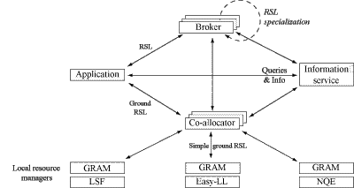

| Resource Management |
Information Services |
Data Management |
 |
|
|
The Globus Toolkit |
||
The Globus Project provides software tools that make it easier to build computational grids and grid-based applications. These tools are collectively called the Globus Toolkit(tm).
The composition of the Globus Toolkit can be pictured as three pillars. Each pillar represents a primary component of the Globus Toolkit and makes use of a common foundation of security.
| Resource Management |
Information Services |
Data Management |
|
|
|
|
The Globus Toolkit |
||
GRAM implements a resource management protocol, MDS implements an information services protocol, and GridFTP implements a data transfer protocol. They all use the GSI security protocol at the connection layer.
These technologies are designed to be modular, but complementary. You can download the components separately, or all together. Additionally, you can obtain the client software independently of the server software if you'd like.
The software is now packaged using the Grid Packaging Toolkit, developed in collaboration with the NCSA.
The Globus Toolkit uses the Grid Security Infrastructure (GSI) for enabling secure authentication and communication over an open network. GSI provides a number of useful services for Grids, including mutual authentication and single sign-on.
The primary motivations behind the GSI are:
GSI is based on public key encryption, X.509 certificates, and the Secure Sockets Layer (SSL) communication protocol. Extensions to these standards have been added for single sign-on and delegation. The Globus Toolkit's implementation of the GSI adheres to the Generic Security Service API (GSS-API), which is a standard API for security systems promoted by the Internet Engineering Task Force (IETF).
See the GSI webpage for more details.
The Globus resource management architecture is a layered system in which a high-level global resource management services are layered on top of local resource allocation services. Below is an overview of the various components in the Globus resource management architecture.

From the above illustration, we can see that there are three main components to the Globus resource management system are an extensible resource specification language, the interface to local resource management tools, and a co-allocator.
The RSL provides a method for exchanging information about resource requirements between all of the components in the Globus resource management architecture.
The GRAM provides a standardized interface to all of the various local resource management tools that a site might have in place, including LSF, NQE, LoadLeveler, and Condor.
DUROC provides a co-allocation service; that is, it coordinates a single request that may span multiple GRAMs.
Additonally, the Information Service is provided by MDS. There is currently no Resource Broker in the Globus Toolkit.
The Globus Metacomputing Directory Service (MDS) provides the necessary tools to build an LDAP-based information infrastructure for computational grids.
MDS uses the LDAP protocol as a uniform means of querying system information from a rich variety of system components, and for optionally constructing a uniform namespace for resource information across a system that may involve many organizations.
The Grid Resource Information Service (GRIS) provides a uniform means of querying resources on a computational grid for their current configuration, capabilities, and status. Such resources include, but are not limited to:
The GRIS can be easily extended to provide additional information, which will be covered in the advanced configuration section.
The Grid Index Information Service (GIIS) provides a means of knitting together arbitrary GRIS services to provide a coherent system image that can be explored or searched by grid applications. GIISes thus provide a mechanism for identifying "interesting" resources, where "interesting" can be defined arbitrarily. For example, a GIIS could list all of the computational resources available within a confederation of laboratories, or all of the distributed data storage systems owned by a particular agency. A GIIS could pool information about all of the grid resources (computation, data, networks, instruments) in a particular research consortium, thus providing a coherent system image of that consortium's computational grid.
GridFTP is a high-performance, secure, reliable data transfer protocol optimized for high-bandwidth wide-area networks. The GridFTP protocol is based on FTP, the highly-popular Internet file transfer protocol. We have selected a set of protocol features and extensions defined already in IETF RFCs and added a few additional features to meet requirements from current data grid projects.
Our white paper, GridFTP: Universal Data Transfer for the Grid, describes the motivations behind this work in more detail. A subsequent update titled GridFTP Update, January 2002 provides the latest news regarding GridFTP, including current status and plans for future development.
GridFTP provides the following protocol features.
We have prepared a draft specification for the GridFTP protocol through the Global Grid Forum, and intend to submit a draft standard to the IETF for review and approval.
Last modified: Wed Apr 17 10:38:44 CDT 2002